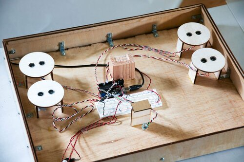
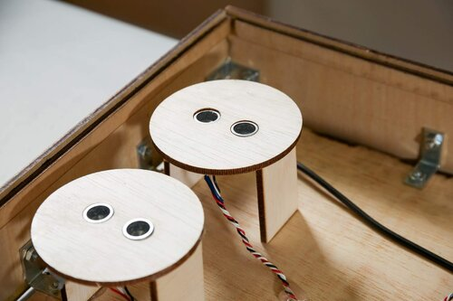
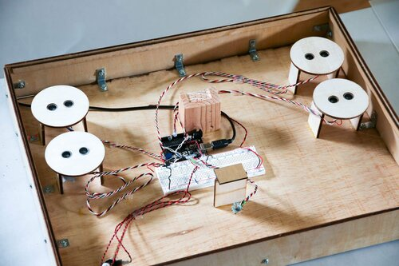
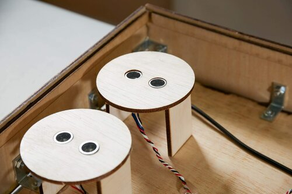
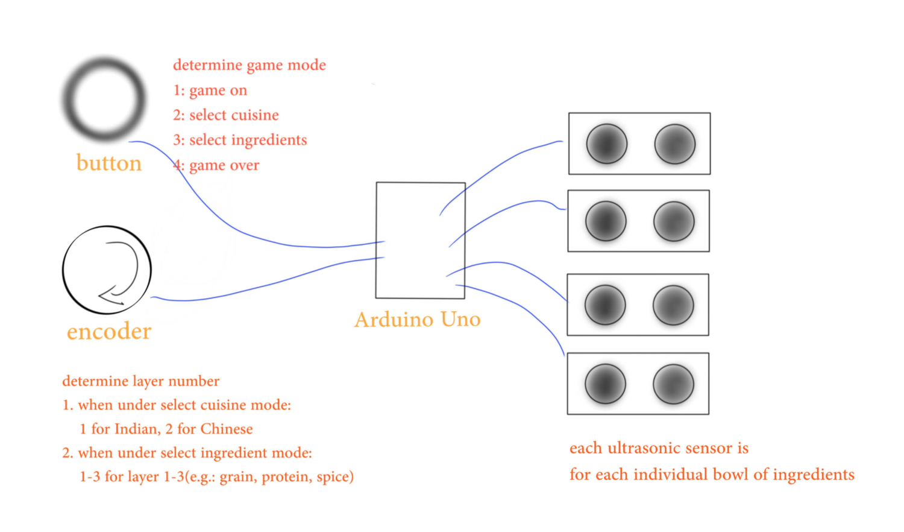
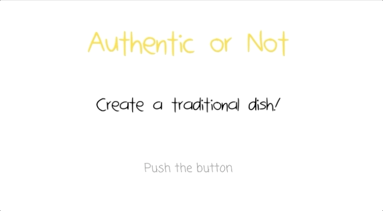
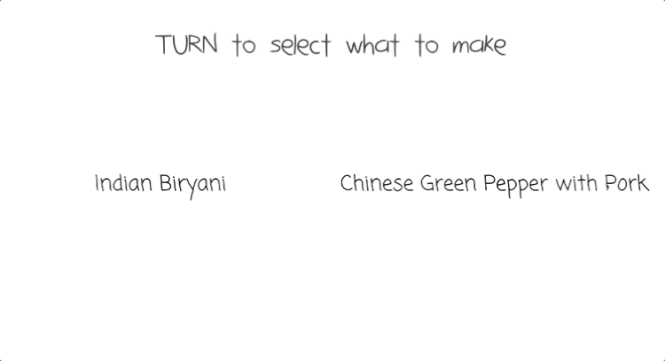
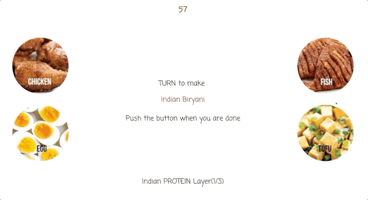
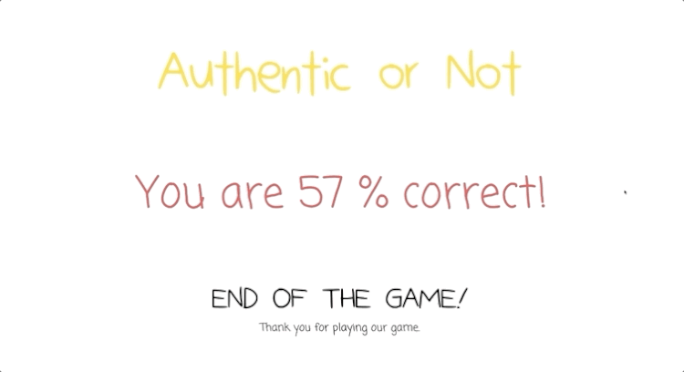

Authentic or Not - Interactive Cooking Game
An interactive game to learn recipes visually.
Highlights
This project is created to educate people to cook traditional authentic food. As international students, we have seen people confusing fusion food as authentic. This interactive game welcomes people to play, learn, and embrace the traditional culture through learning authentic recipes. It has been exhibited in 2019 ITP Winter Show and Liberty Science Center Engineer Week 2020.
Tools: Arduino, P5.js, Laser-Cutter, Illustrator, Power Tools
Skills: Creative Coding, Physical Computing, Fabrication, Interaction Design, User Testing
Time: Made within 4 weeks in Dec. 2019
Exhibition
- 2019 ITP Winter Show
- 2020 Liberty Science Center 2020
Problem Statement
How to teach people authentic food to carry on the heritage of our culture?
 



Background
Living overseas for more than five years allows me to appreciate the Chinese culture even more. Since I only go back to China once a year, I treasure every moment I have with my family. Staying true to the tradition of the cuisine is my way of expressing my love for my family. However, my frustration with Chinese restaurants here in the U.S. grew when I discover their dishes are not as authentic as they advertised. Therefore, Shannel and I created this game to remind people to honor the traditional culture.
Game Rules
- Press the button to start the game
- Turn the encoder to select the cuisine Hover the hand on top of the ingredient bowls or use the spoon to mimic the cooking
- Turn the knob/encoder to select the layers of ingredients
- Press the button to end game
- Game over screen appears: reveal the score as well as the ingredients chosen
Role
- Creative coding with p5.js and Arduino
- Fabrication with laser cutter, 3d-printer, and power tools
- Iterations through multiple user testing sessions
Research Insights
- Popular dishes such as chicken tikka masala are technically not “authentic“
- Fortune cookies are not Chinese snacks. They originated from Japan, then populated by Chinese immigrants in California.
- There is a mismatch of information and perception.
Ideation/Exploration & Development
Interface Design
Material Selection
Plywood & Transparent Acrylic Sheet to create a minimalistic stove.
Sensor Selection
- Motion sensors (not accurate and only detect the change of the movement)
- Infrared sensors (will be more effective, yet we wanted the clean outlook of the interface, out of stock)
- Ultrasonic sensors (best alternative out of three with the limited time frame. We would potentially upgrade to a more accurate one)
- Encoder to select different layers rather than potentiometer
Interface Design Prototype
- What may be comfortable and intuitive for users?
- What makes sense in terms of hand movements?
Refinement and Testing
User Testing
We conducted three sessions of user testing throughout the process. The first one was conducted with a paper prototype and barely working code. The second one was a prototype with functioning code. The last one was the final project with working code.
Observations
60% of players use the spoon while the rest use hand 20% of players tried to lift the bowl 30% of players used the spoon to mix in the big bowl (which functions as a decoration)
In-depth Interview Insights
- Instructions are too wordy
- Transition from cuisine selection to ingredient selection is unclear
Adjustments
Based on the feedback, I adjusted a few to make the interactive experience smoother
- Separated the instruction into more screens. The goal is to have one instruction per screen.
- Added transition in cuisine selection screen
- Implemented details on the game over phase
- Added traditional music and sound effects to create an immersive cooking experience
Solution
Interface Design Highlights
Start the game
Select the recipes
Select the ingredients
End of the game
Screen Demo
Here is the video showing the digital interface created in p5.js.
Moving forward
- Update the ultrasonic sensors to VL53L1X distance sensor
- Create a canceling effect on the ingredients that are mistakenly chosen by the users
- Create a new enclosure that mimics the conduction top - feedback from one user testing session
- Make the button and the encoder cover out of the same material to create consistency
- Potentially will not glue the bowls to the platform, allowing to freedom to either pick it up and dump it in the big bowl
People Playing the Game
Applications
Small Scope:
- Friendly competition of knowledge of traditional cuisine
- Educational board game for the public Game center played through projection and Kinect
- Helps to hold ethnic restaurants accountable for their decision on presenting the dishes to the public
Large Scope:
- An app educates people how to make traditional cuisine by recognizing whatever they picked up in a grocery store
Conclusion
The game is incomplete without the participation of the players. It is empowering to see people trying the game multiple times to get it right. One kid in particular spent 20 minutes in the station in order to get both cuisines right. It is rewarding to see people from different age groups enjoying the game.
With the recipes to take home along, I am hoping that the education of the traditional cuisine will be continued. I see it as a success to achieve the goal of the game: to educate people of traditional cuisine in order to honor the culture.
Special thanks to Shannel Doshi.